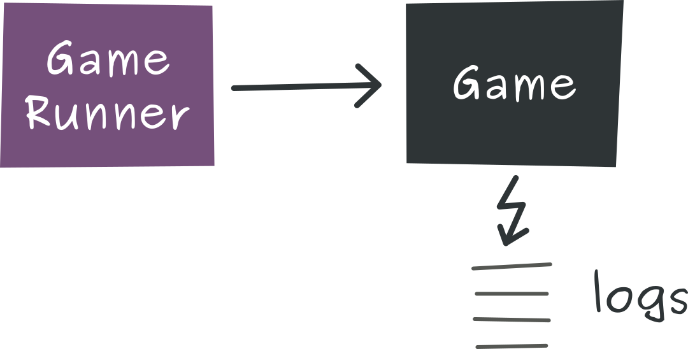
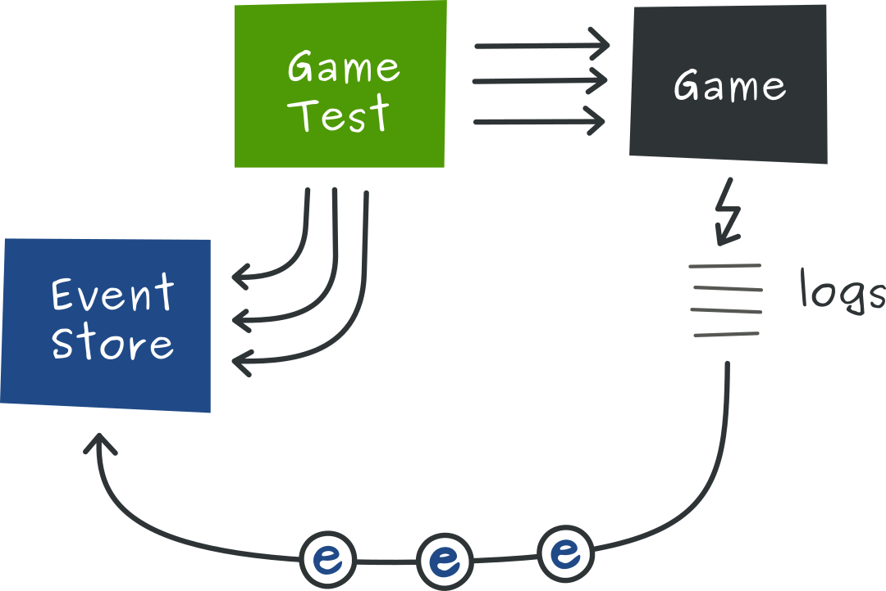
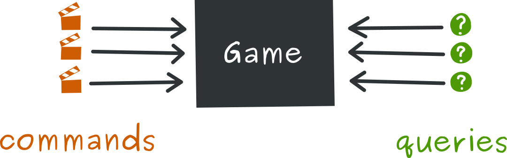
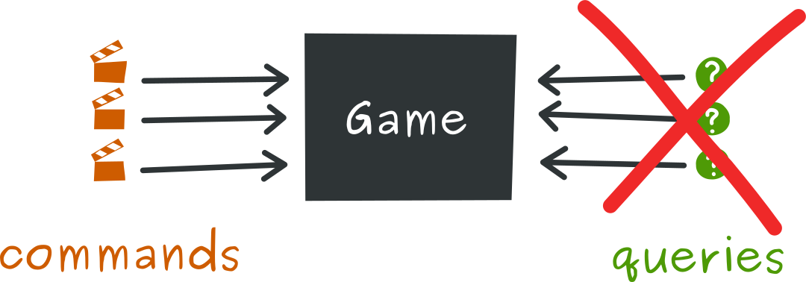
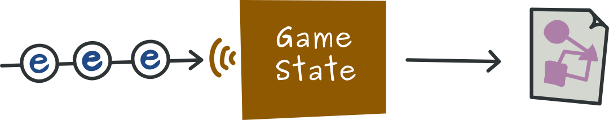
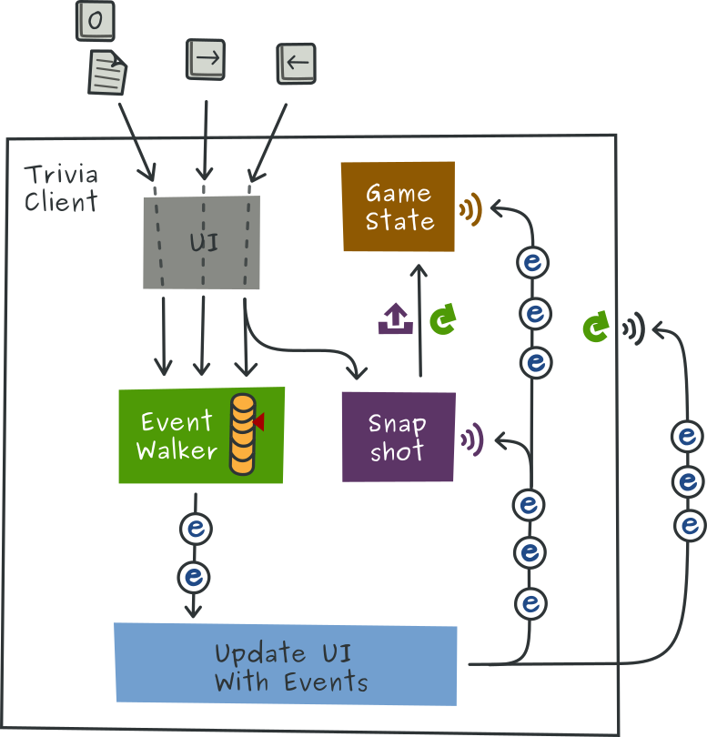

git checkout live-coding-1mvn cleanGameGameRunnerOn va commencer le kata ensemble en écrivant des tests
C'est là normalement que vous vous demandez si vous vous ne vous êtes pas trompés de salle
On vous confirme : c'est bien un live coding sur Event sourcing / CQRS
Un peu de patience : vous allez comprendre
Aller dans GameTest
Tester la fonctionalité d'ajout d'un joueur : should_add_one_player()
assertThat(result).isTrue()
assertThat(game.howManyPlayers()).isEqualTo(1)
Pas suffisant pour être sûr que le nom du joueur est bien pris en compte
Lancer le test
Oh regarde : il y a des sorties dans la console
Ça serait pas des événements par hasard ?
Montrer l'image 1

assertThat(eventStore.events()).containsExactly(
new PlayerWasAdded("eric"),
new PlayersCount(1));
Implémenter PlayerWasAdded et PlayersCount qui doivent implémenter Events et dans le package event
Ajout de @Rule EventStore
Fonction String -> Event qui retourne :
return new UnknownEvent(line);
Ça fail
Implémenter la lambda
line -> {
Matcher matcher;
PlayerWasAdded[TAB]
PlayersCount[TAB]
return new UnknownEvent(line);
}
Ça passe
Montrer l'image 2

Résumé : on a interprété les sorties de la console comme des événements expoitables dans un event store.
Transition : nous allons découvrir quelques fonctionnalités d'un event store à partir des tests.
Dupliquer le test précédent en should_add_two_players
Ajouter game.add("Pierre-Jean")
Ajouter les assertions seulement sur
sebça fail
EventStore doit enregistrer les événements quand je le décide
Ajouter eventStore.start()
Ça passe
Aller voir l'implem
On ne voudrait parfois ne s'intéresser qu'à un seul type d'event
Dupliquer le test précédent en should_add_players_with_same_name
Ajouter deux fois "Pierre-Jean"
Asserter seulement PlayerWasAdded
C'est plus lisible pour le test
ça fail
eventStore.events(PlayerWasAdded.class)
Ça passe
Aller voir l'implem
Oh là là c'est embêtant toutes ces sorties dans la console
Comment on clean un peu tout ça ?
Ajouter eventStore.debug() au début du test
Ça compile pas
Créer la méthode dans EventStore
Expliquer les processeurs
Bouger l'initialisation des 2 processeurs existants dans debug()
preProcessors.add(line -> console.format("%20s -> ", line));
postProcessors.add(console::println);
Ça compile et on ne voit que les logs qui nous intéressent
Il y a plein d'autres fonctionnalités dans un EventStore
On va s'arrêter là
Résumé : c'est quoi l'EventStore ?
C'est la base de l'event sourcing
Un système de persistance d'événements immuables et chronologiques
On vous avait promis CQRS
Découvrons les concepts par du code
git checkout live-coding-2
IntelliJ : rebuild project
“Command Query Responsability Segregation”
On va grave ségreger
Créer les interfaces Commands et Queries
Game les implémente
Parcourir les méthodes (noms et implem)
Choisir dans quelle interface ça matche
On doit arriver à ça
Commands
boolean add(String)
void roll(int)
boolean wasCorrectlyAnswered()
boolean wrongAnswer()
Queries
boolean isPlayable()
int howManyPlayers()
Montrer l'image 3

Transition: on a vu le découpage fonctionnel, voyons le découpage technique
Aller dans l'interface Commands
Sur les commandes, on peut juste remarquer qu'elles ne sont pas toutes void
Généralement on préfère faire du fire and forget et être asynchrone sur les commandes
Prendre l'exemple de add qui retourne toujours true !
Aller dans l'interface Queries
Montrer les usages de isPlayable()
Utilisé que dans les tests : c'est du code mort
Supprimer isPlayable et ses usages
Revenir sur l'interface Queries
Montrer les usages de howManyPlayers()
C'est une méthode privée
Supprimer howManyPlayers()
Revenir sur l'interface Queries
Il n'y a pas de queries dans Game
C'est une implémentation du circuit d'écriture du système
Montrer l'image 4

Nouveau scénario : notre jeu a du succès. Beaucoup de succès.
Notre PO nous demande d'implémenter un service web qui permet de récupérer à tout moment l'état du jeu
Nous allons développer un composant dédié : GameState
Afficher GameState
Il faut réparer GameState
Exécuter GameStateTest
Ça fail
Réparer should_add_player
Laisser should_write_json_file et should_write_json_file_at_startup pour la fin
À chaque modification de l'état, nous allons écrire sur le disque
Montrer l'image 5

Créer la méthode write(), copier-coller le code de création de l'ObjectMapper et ajouter
try {
File file = Paths.get("/tmp", "game-state.json").toFile();
mapper.writeValue(file, this);
} catch (IOException e) {
throw new UncheckedIOException(e);
}
Appeler write() dans le constructeur et à chaque événement qui modifie un état
Ça passe
Montrer la méthode main()
Exécuter la méthode main()
Dans un navigateur : file:///tmp/game-state.json
Entrer seb was added
Rafraîchir la page
Résumé : on a vu concrètement comment séparer les responsabilités lecture/écriture
On a vu que l'implémentation était simplifiée si on travaillait déjà en event sourcing
Le problème principal que CQRS essaie de résoudre est bien la performance
Depuis le début, on ne fait qu'avancer dans les événements.
Que se passe-t-il si un problème survient lors de l'envoi des messages ?
Comment faire si on doit être tolérant à la panne, voire restaurer l'état du système 10 minutes/un jour avant ?
git checkout live-coding-3
Pour que ça vous parle un peu, on a fait intervenir un graphiste, un UX designer et une modéliste 3D
Lancer TriviaClient
Taper o pour charger la liste des événements.
Scroller ou utiliser les flèches
Ce qu'on aimerait c'est pouvoir revenir en arrière
Montrer l'image 6

On a déjà une implémentation de snapshot
Aller dans Snapshots
On est en terrain connu :
EventsListenerGameStateAller sur SnapshotsTest
Lancer les tests
Ça fail
Le but ici est de définir une stratégie de snapshot : à l'état initial et tous les 10 événements
Appeler snapshot() dans le constructeur
Générer un snapshot tous les 10 événements
Dans newEvent():if (index % 10 == 0) snapshot();
Ça passe
Démo
Lancer TriviaClient
Event Sourcing c'est proche du métier : EventStorming, système auditable
CQRS ça clarifie les choses, ça apporte de la perf
Statégies de rejeu important pour la résilience